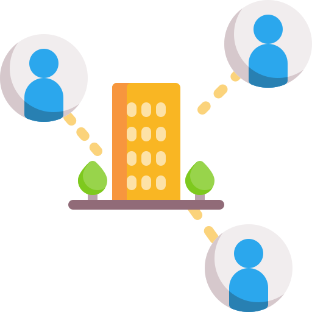

ER 模型（实体关系模型），是 Entity-relationship model 的缩写，最是由美籍华人陈品山于 1976 年 3 月在 ACM Transactions on Database Systems 发表论文《The Entity-Relationship Model–Toward a Unified View of Data》被人熟知。因为它既能够帮助人们描述现实世界事物与事物之间的联系，又能够指导数据库设计，所以迅速流行起来。

什么是 ER 模型
在我看来，ER 模型是一种简化抽象的思维方式。通过将几个简单的几何符号的组合链接，把现实世界复杂的事物和关系抽象可视化出来，不同部门的人员，都能够按照模型图展开工作，节约沟通成本。

ER 中的几个要素
实体： 实体用矩形表示，一般对应的是现实世界真实存在的事物，比如图中左侧矩形的公司或右边矩形的员工，在更细致的实体关系模型中，又将实体分为强实体和弱实体，强实体（用矩形表示）就是不依赖其他任何实体，可单独存在的事物，而弱实体(一般用双框矩形表示)指的是对另外一个实体具有很强的依赖关系。

关系： 指的是实体与实体之间的联系，比如图中学生拥有成绩单，在 ER 模型中，关系使用菱形来表示。

属性： 指的是实体所拥有的特性，比如学生会有姓名，学号以及年龄等等，在 ER 模型中，一般使用圆形表示。

基数： 指的是实体之间关系对应的数量，常见的基数是 0、1 或多。比如在例子中，一个学生拥有多个成绩单，我们便可以这样表示。

三种 ER 模型
ER 存在三种模型，分别是概念 ER 模型、逻辑 ER 模型和物理 ER 模型，这三层是层层递进的关系，完整的流程是，需求人员先设计概念 ER 模型、信息架构设计人员再进行逻辑 ER 模型设计，最后再由数据库管理人员进行物理 ER 模型设计，并应用到最终的数据库中。
概念 ERD
使用人员：业务人员
作用：业务需求采集梳理
逻辑 ERD
使用人员：产品经理、信息架构师
作用：数据信息的设计
物理 ERD
使用人员：数据库管理员
作用：作为数据库设计的蓝图
| ERD 功能 | 概念 ERD | 逻辑 ERD | 物理 ERD |
|---|---|---|---|
| 实体 | 是 | 是 | 是 |
| 关系 | 是 | 是 | 是 |
| 列 | 是 | 是 | |
| 列的类型 | 可选 | 是 | |
| 主键 | 是 | ||
| 外键 | 是 |
ER 模型应用实例
我们使用一个完整的实例，带大家彻底掌握 ER 模型，比如我们现在要做一个电商类型的 app，业务人员会首先使用概念 ERD 进行建模。

从做往右过一遍 ER 模型图：一个用户会产生多笔订单，每个订单可能包含多个商品，一个商品只能被存在于一个仓库，反过来一个仓库可以存放多种商品，所以这里是多对一的关系。一个仓库可以和多个物流公司合作，一个物流公司可以和多个仓库合作，所以这里是多对多的关系，而一个物流公司可以寄送商品给多个用户，而一个用户可以被多个物流公司服务，所以这里也是多对多的关系。
现在看出来了吧？通过 ER 概念模型图，可以非常方便的进行业务沟通。帮助组内各成员快速了解业务，其中具体有哪些实体，他们之间的对应关系怎样，以及业务的关键流程是啥，都一目了然的呈现出来。
信息架构师或者产品经理，根据业务同学提供的概念 ER 建模图，便可以对其中的信息进行字段的填充

虽然理想情况是团队成员均能够掌握 ERD 的设计使用，但多数情况下，真正懂业务的同事可能不会使用 ERD，所以，常常概念 ERD 和逻辑 ERD 都交由产品经理或信息架构师绘制。有些熟手为了省事，会直接从逻辑 ERD 进行绘制。
到逻辑 ERD 完成之后，真正的数据管理工程师，实施前还需要对数据表关系和字段进行信息补充，包括补充关系中间表、主键和外键的约束等。

物理 ERD 的设计实现最终直接体现到数据库中，因此这一步尽可能完备不要出现逻辑的漏洞，为了方便管理，最好选择一款由物理 ERD 直接生成 sql 建表语句的工具统一管理，市面上有很多这样的工具，小伙伴可以自行去探索一下。